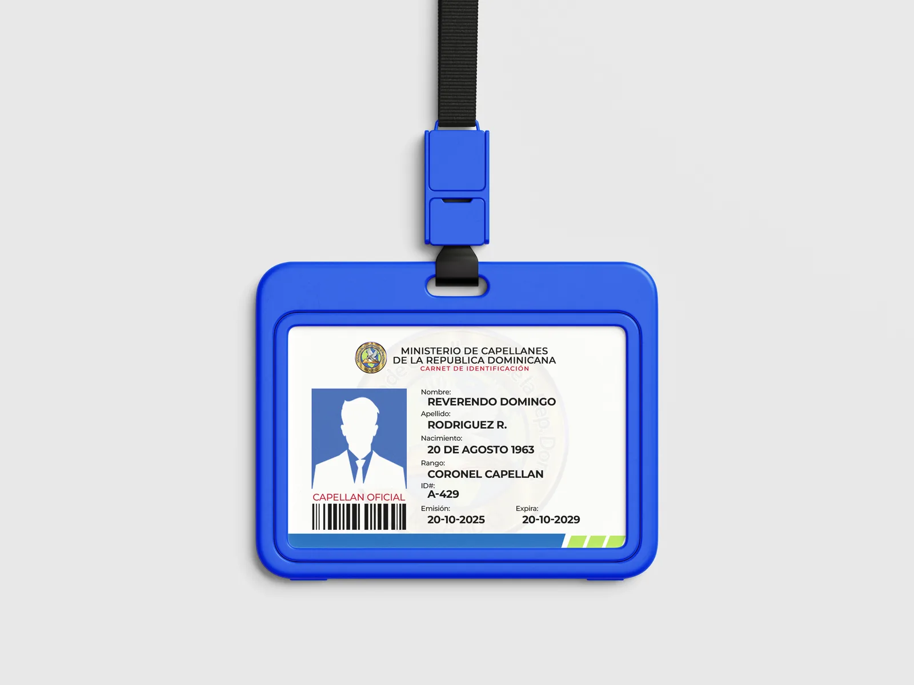
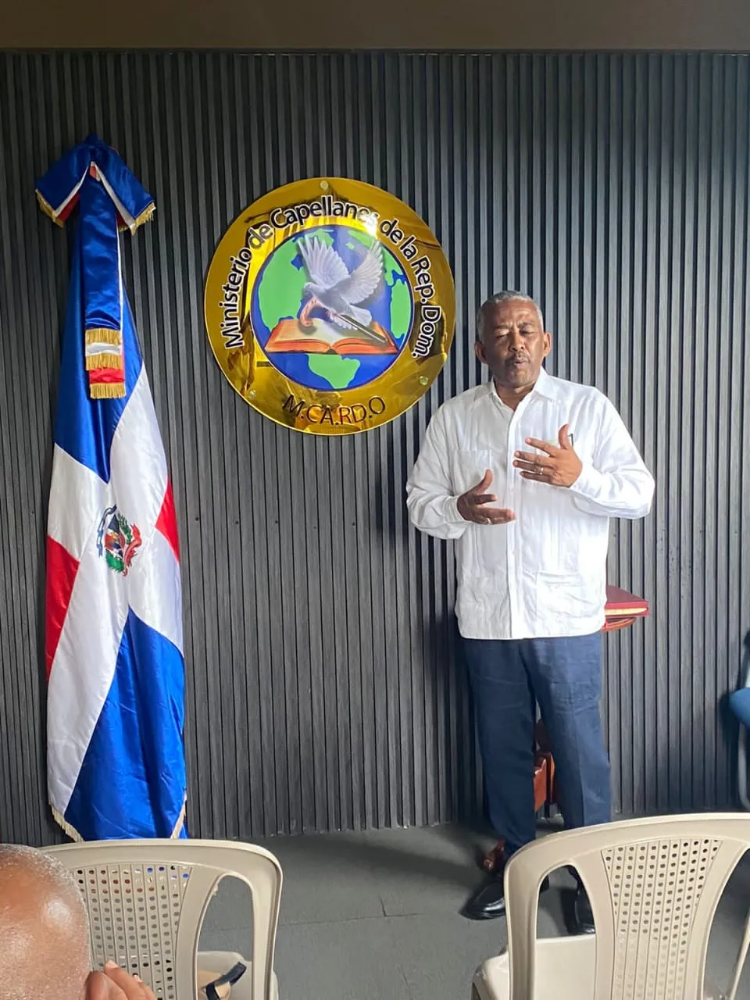
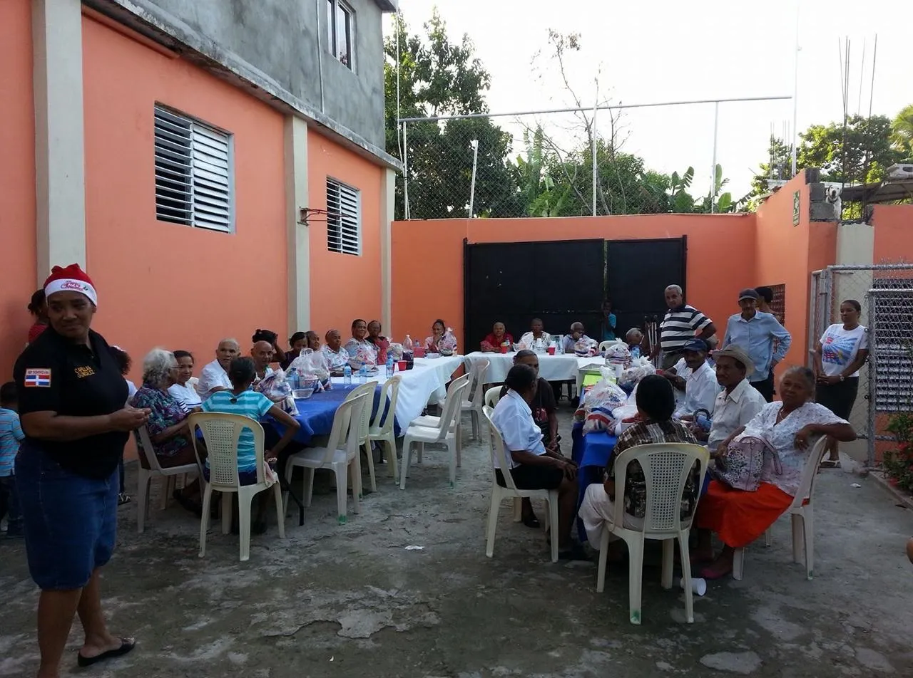

Institución líder en la formación, acreditación, registro unificado y despliegue de capellanes para la asistencia espiritual, hospitalaria, penitenciaria, comunitaria y en situaciones de crisis en todo el territorio dominicano.

[País]-[Año]-[Rango]-[Secuencia]-[DV]
Verifique en tiempo real la autenticidad, vigencia y rango oficial de cualquier capellán acreditado en el país.
Consultar Carnet AhoraInicie su proceso de afiliación, renovación de carnet o acreditación ministerial con radicación de expediente digital.
Iniciar ExpedienteConsulte el estado de su postulación mediante su código único de solicitud o cédula de identidad.
Rastrear EstatusHerramienta pública oficial para embajadas, cuerpos consulares, autoridades judiciales, policiales, hospitalarias, penitenciarias y la ciudadanía para validar e imprimir certificados de miembros activos en la República Dominicana.
Complete el formulario oficial de radicación de expediente para postulantes a Capellán, renovación de credencial o asignación de rango en el escalafón nacional de M.CA.RD.O.
Ingrese el código de radicación generado en su comprobante para conocer en qué fase se encuentra su acreditación ministerial.
El Ministerio de Capellanes de la República Dominicana (M.CA.RD.O. / MICARD) opera formalmente constituido bajo las leyes de la República Dominicana y sus Estatutos Institucionales, enfocado en dotar a los capellanes de la investidura, conocimiento ético y respaldo jurídico para su desempeño ante organismos públicos y privados.
Inspirados en las directrices de derechos humanos y auxilio humanitario de organismos internacionales como la ONU y la UNESCO, promovemos el servicio desinteresado, la mediación pacífica de conflictos y el consuelo espiritual integral sin distinción de credo, etnia o condición social.
Capacitar, acreditar, respaldar y desplegar un cuerpo élite de capellanes altamente capacitados que brinden acompañamiento espiritual, social y humanitario en momentos de vulnerabilidad, promoviendo la paz y la reconciliación.
Ser la máxima institución de referencia en la República Dominicana y la región del Caribe en la profesionalización de la capellanía, reconocida por su integridad, solvencia moral y efectividad de servicio ante los poderes del Estado y la sociedad.
Integridad inquebrantable, compasión activa, respeto irrestricto a la dignidad humana, vocación de servicio, confidencialidad ministerial, excelencia y fe en Dios.
Nuestros capellanes acreditados intervienen en diversas áreas críticas de la sociedad para brindar asistencia profesional, consuelo y apoyo logístico-humanitario.
Acompañamiento espiritual y emocional a pacientes en cuidados intensivos, soporte a familiares en duelo y orientación bioética al personal médico en los principales centros hospitalarios de Santo Domingo, Santiago y provincias.
Programas de orientación moral, apoyo espiritual y planes de reinserción social para personas privadas de libertad en los Centros de Corrección y Rehabilitación (CCR) de la República Dominicana.
Respuesta inmediata ante emergencias meteorológicas, huracanes, incendios y accidentes mayores, coordinando primeros auxilios psicológicos y albergues de rescate.
Operativos médicos, distribución de alimentos, comedores comunitarios y mediación de conflictos vecinales en barrios vulnerables y zonas rurales.
Atención pastoral especializada, fortalecimiento de valores cívicos y apoyo al bienestar mental y familiar de los miembros de las fuerzas del orden y seguridad.
Prevención de violencia, asesoría y consejería a jóvenes estudiantes, fomento del respeto y talleres de fortalecimiento del núcleo familiar en escuelas y colegios.
Conozca los diferentes niveles de acreditación establecidos en los Estatutos de MICARD según la formación teológica, experiencia y función operativa.
Nivel de inicio operativo. Apoya en labores logísticas, asistencia en eventos comunitarios y primeros auxilios de emergencia.
Ministro ordenado o pastor activo con liderazgo en programas hospitalarios, penitenciarios y ceremonias solemnes.
Oficial de comando y coordinación territorial. Faculta la gestión de delegaciones provinciales y vinculación institucional.
Máxima jerarquía representativa. Miembros del Estado Mayor, directores de comisiones nacionales e inspectores generales.
Conozca los momentos destacados de nuestras reuniones de oficiales en San Cristóbal, juramentaciones, jornadas de servicio y encuentros nacionales.


Contamos con presencia y oficiales designados en las principales regiones del país para atender solicitudes institucionales inmediatas.
Coordinación Nacional, Registro Central de Credenciales, emisión de carnets y atención institucional para el Distrito Nacional y Gran Santo Domingo.
(809) 555-0199Comando regional Valdesia. Coordinación de asambleas, capacitación y proyectos de capellanía penitenciaria y comunitaria.
(809) 555-0198Cobertura en Santiago de los Caballeros, La Vega, Puerto Plata, Bonao y San Francisco de Macorís con capellanes hospitalarios activos.
(809) 555-0197Alineados a las directrices de confederaciones de capellanía internacionales y entidades de socorro humanitario.
[País]-[Año]-[Rango]-[Secuencia]-[Dígito Verificador] (Ej: DO-2026-OC-0015-9). Esto asegura que no existan duplicidades y permite a cualquier autoridad validar instantáneamente el carnet en nuestro portal con su código QR.
Estamos disponibles para coordinar operativos de apoyo, responder consultas sobre acreditación de miembros o brindar asistencia capellánica ante situaciones de crisis.